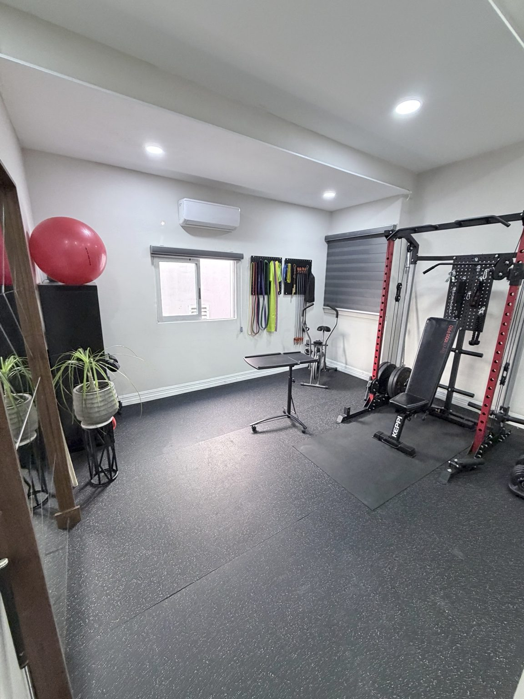

Entrenamiento personalizado · Zona Río, Tijuana
Deja de improvisar. Empieza a progresar.
Si quieres empezar a entrenar, volver después de una pausa o dejar de adivinar en el gimnasio, construimos contigo una ruta clara: evaluación, técnica, programación individual y seguimiento semanal.
30 minutos · Sin obligación de inscripción

Dirección
Tu objetivo merece más que una rutina copiada.
Una rutina genérica no conoce tu punto de partida ni cómo ejecutas los movimientos. Empezamos desde ahí y convertimos tu objetivo en un proceso que puedes ejecutar, revisar y ajustar.
El programa
Programa de Entrenamiento Personalizado de 90 Días
Un programa híbrido con compromiso mínimo de tres meses: trabajamos contigo en clínica al inicio y mantenemos tu entrenamiento en marcha con programación individual, revisión semanal y acompañamiento por WhatsApp.
- RAÍZ
Evaluación presencial para conocer tu punto de partida y tu objetivo.
- CAPACIDAD
Técnica y progresión con una prescripción individual.
- RETORNO
Una forma de entrenar que puedes sostener y ajustar.
Primera semana
La primera semana pone el plan en movimiento.
Después de tu evaluación inicial, tendrás tres sesiones en clínica enfocadas en técnica y en aprender a ejecutar tu programación inicial. No es una clase grupal ni una rutina descargable: es una base práctica para que entrenes con mayor claridad.
Revisión incluida
Tu programa no se queda igual mientras tú avanzas.
Cada semana de programa activo incluye una valoración presencial de 60 minutos, sin costo adicional, para revisar tu técnica, progresión, tolerancia al entrenamiento y recuperación. Con esa información ajustamos tu programación.
Puedes solicitar cambios de horario incluso con menos de 24 horas de anticipación, siempre que nos avises por el WhatsApp oficial de la clínica antes del inicio de tu cita y exista disponibilidad.
Es una sola cita semanal de seguimiento del programa; no es una cita adicional ni una sesión completa de tratamiento de fisioterapia.
Incluye
Un sistema para entrenar con dirección.
- Evaluación inicial presencialpara definir el punto de partida del entrenamiento.
- Tres sesiones de técnicaen clínica durante la primera semana.
- Prescripción individual de ejerciciocon una ruta clara para entrenar.
- Valoración semanal presencial de 60 minutossin costo adicional, en una sola cita.
- Ajustes y check-ins semanalespara revisar el siguiente paso.
- Soporte por WhatsApppara coordinación y preguntas del programa.
- Guía de recuperación dentro del alcance profesionalincluida cuando sea apropiada.
Puede ser para ti si…
Quieres dejar de improvisar.
Quieres comenzar fuerza, regresar después de inactividad, dejar de improvisar en el gimnasio o seguir un plan profesional para fuerza, masa muscular o composición corporal.
Otro primer paso
Cuando necesitas una revisión individual.
Si buscas tratamiento completo para dolor o una lesión actual, atención urgente o diagnóstico médico, puede ser más apropiado otro servicio o una revisión clínica individual.
Así empieza
Una conversación clara antes de decidir.
- 1
Solicita tu consulta introductoria de 30 minutos.
- 2
Confirmamos si el programa y la asistencia presencial son compatibles con lo que buscas.
- 3
Si decides inscribirte, realizamos tu evaluación inicial y programamos la primera semana.
- 4
Entrenas con un plan individual y lo revisamos cada semana en una valoración presencial de 60 minutos.
PhysioPro
Acompañamiento profesional, no promesas vacías.
El programa combina un enfoque de rendimiento con progresión individual y revisión presencial. La consulta es el espacio para revisar tu objetivo y resolver dudas sobre el proceso.
Preguntas
Antes de solicitar tu consulta.
¿La consulta introductoria tiene costo?
No. Dura 30 minutos y no te obliga a inscribirte.
¿Cuánto dura el programa?
El compromiso mínimo es de tres meses.
¿Necesito experiencia en gimnasio?
No. El punto de partida se define de forma individual.
¿Tengo que ir a la clínica?
Sí. La evaluación inicial y tres sesiones de técnica de la primera semana son presenciales.
¿La valoración semanal es fisioterapia?
No. Es una cita presencial de 60 minutos, incluida cada semana de programa activo sin costo adicional, para evaluar y ajustar tu entrenamiento. No reemplaza una sesión completa de fisioterapia.
¿Cuándo empieza el programa y cuántas valoraciones incluye?
El día 1 es la fecha de tu evaluación inicial presencial, después de inscribirte. El programa dura 90 días naturales e incluye una valoración presencial de 60 minutos por cada semana de programa activa, incluida la última semana parcial, hasta un máximo de 13.
¿Qué pasa si no puedo asistir a mi valoración semanal?
Puedes solicitar un cambio de horario incluso con menos de 24 horas de anticipación, siempre que nos avises por el WhatsApp oficial de la clínica (+52 663 487 5859) antes del inicio de tu cita. Los horarios de reemplazo dependen de la disponibilidad y no podemos garantizarlos. Primero buscamos reprogramarla dentro de la misma semana. Si no es posible, puede pasar a la semana siguiente (solo una valoración pendiente a la vez); no sustituye la valoración regular de esa semana y, si no hay espacio para ambas, damos prioridad a la valoración trasladada. Un segundo traslado requiere aprobación expresa de la clínica. Si no asistes y no avisas antes del inicio de tu cita, la valoración se cuenta como utilizada; la clínica puede aprobar excepciones individuales, pero no son automáticas.
¿Y si la clínica cancela una valoración?
Si la cancelación es de PhysioPro, conservamos tu valoración, coordinamos una cita de reemplazo y no se cuenta como utilizada ni te penaliza.
¿Qué pasa con una valoración pendiente cuando termina el programa?
El programa termina el día 90. Hay siete días naturales de gracia únicamente para una cita de reemplazo con fecha y hora confirmadas por PhysioPro antes de que termine el día 90; una solicitud pendiente no es suficiente. El periodo de gracia no genera valoraciones nuevas ni extiende el programa.
¿Puedo pausar el programa o pedir un crédito o reembolso?
No hay pausas automáticas; si tienes una circunstancia especial, la revisamos de forma individual. No ofrecemos créditos ni reembolsos automáticos por valoraciones no utilizadas o perdidas, sin perjuicio de los derechos que te reconoce la ley aplicable y de los términos de inscripción.
¿Cuál es el precio?
Los términos se explican en la consulta cuando confirmemos que el programa es adecuado para tus objetivos.
Consulta introductoria
Empieza con una conversación clara.
Escríbenos por WhatsApp y cuéntanos tu objetivo en tus palabras. Te responde el equipo de PhysioPro para ver si el programa encaja contigo.
30 minutos · Sin costo · Sin obligación de inscripción. Por favor no compartas información médica detallada en el primer mensaje. Al escribirnos, usaremos tu número y mensaje solo para responderte; consulta el Aviso de Privacidad.